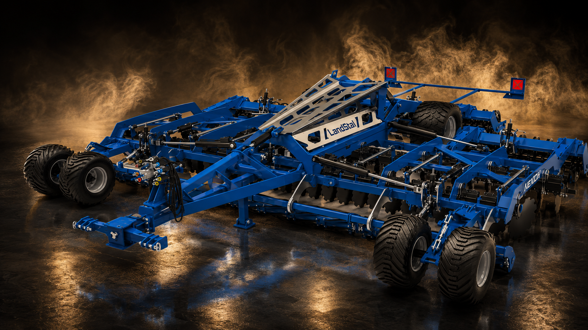
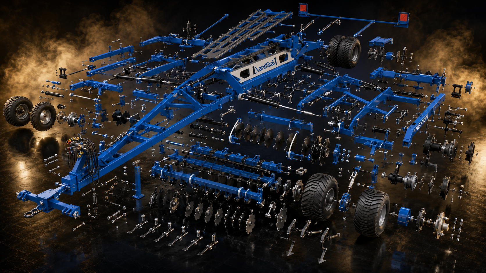

Těžké diskové brány
Nexion
Velký diskový stroj pro intenzivní zpracování půdy a vysoký denní výkon. Masivní konstrukce, transportní náprava a široká pracovní sestava pro farmy, které potřebují výkon a stabilitu.
záběr 5 m
disky 620 mm
hmotnost od 4500 kg

Scroll visual
Nexion rozložený do pracovních celků
Posouvejte stránku dolů. Kompletní diskové brány se plynule promění v explozní pohled na tažnou oj, hlavní rám, diskové sekce, hydrauliku, kola a zadní pracovní celky.

Rám
Kola
Diskové sekce
Hydraulika
Video
Nexion v pohybu
Video je vložené lokálně a zůstává součástí webové složky.
Proč Nexion
Masivní diskové brány pro větší výměry
Nexion je určený pro provozy, kde rozhoduje průchodnost, stabilita a schopnost kvalitně zpracovat velkou plochu. Doporučíme konfiguraci podle traktoru, půdy a požadované pracovní hloubky.